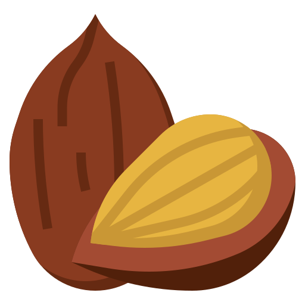
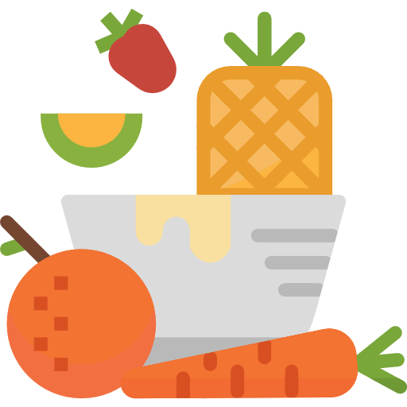
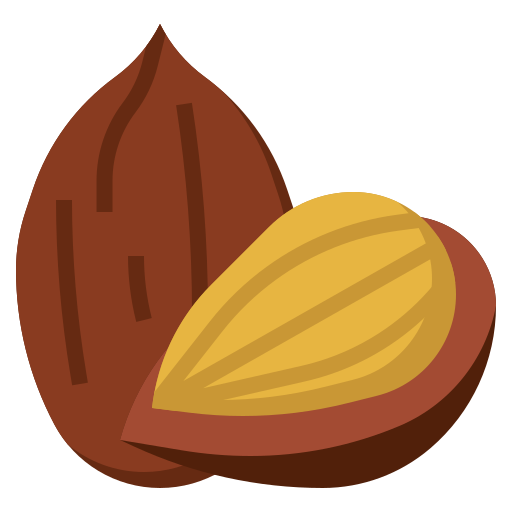
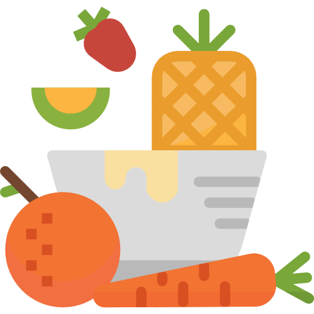

Desayuno
| Un café con leche desnatada. 60 gramos de pan integral con aguacate y tomate. | Un vaso de leche con cereales sin azúcar añadido. | Un vaso de leche con copos de avena. | Un café con leche desnatada. 60 gramos de pan integral con aguacate y tomate. | Un vaso de leche con cereales sin azúcar añadido. | Un vaso de leche con copos de avena. | Un vaso de leche con cereales sin azúcar añadido. |
Almuerzo
| Brócoli al vapor. Salmón al horno con patata y cebolla. Dos rodajas de piña. | Ensalada con lechuga, pimiento, cebolla, pepino, zanahoria y lentejas. Un yogur. | Acelgas con patata. Lenguado a la plancha con champiñones salteados. | Ensalada verde. Macarrones con tomate triturado, cebolla y carne magra picada. Un yogur. Una naranja. | Judías verdes con patata. Pechuga de pollo a la plancha especiada con cúrcuma. Una pera. | Ensalada de tomate y cebolla. Sepia estofada con patata y verduras. Un yogur. | Espinacas con garbanzos y un huevo duro. Una ensalada. Un yogur con fresas. |
Refrigerio
| Media manzana o pera con 12 almendras | Media taza (120 mililitros, ml) de bayas con 6 onzas (oz), o 170 grams (g), de yogur natural o queso cottage bajo en calorías | Una banana pequeña con 1 cucharada (15 ml) de mantequilla de maní o almendra sin sal | Un cuarto de taza (62 ml) con frutos secos surtidos (trail mix) y nueces (sin azúcar o sal agregados) | Una taza (240 ml) de sopa de tomate con cinco galletas integrales | Un huevo duro y 12 almendras | Un batido de frutas con 1 taza (240 ml) de leche sin grasa, media banana pequeña y media taza (120 g) de bayas |
Cena
| Ensalada de tomate y espinacas. Tortilla francesa con pan. Un yogur. | Puré de calabacín y cebolla. Merluza al horno con boniato. Dos rodajas de sandía. | Sopa con fideos. Tortilla de alcachofas. Un yogur. | Ensalada de tomate, cebolla, maíz, queso fresco 0 % y garbanzos. Un yogur. | Puré de calabacín y cebolla. Rape guisado con caldo de pescado y cuscús. Fresas. | Judías verdes con zanahoria al vapor. Revuelto de huevo con espárragos. Pan integral. Dos rodajas de piña. | Ensalada verde. Pechuga de pollo a la plancha con pimienta, tomate triturado y arroz integral. Un yogur. |